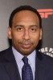

País:Estados Unidos, 95 minutos.
Idiomas:Inglés
GénerosAnimación, Familiar
Director/es:Hamish Grieve
Guionistas:Hamish Grieve, Rob Harrell, Matt Lieberman
Códec de vídeo:Unknown
Número: 169


Certificación:PG
Argumento:
En un mundo en el que los monstruos están domesticados y la lucha de monstruos es un deporte popular, Winnie quiere seguir los pasos de su padre convirtiendo a un monstruo en un luchador.
Reparto 
Medio: Archivo de video,
Localización: D:\Multimedia\Películas\Monstermanía (2021)\Monstermanía (2021).mkv
Prestado: No
Rel. aspecto: Unknown